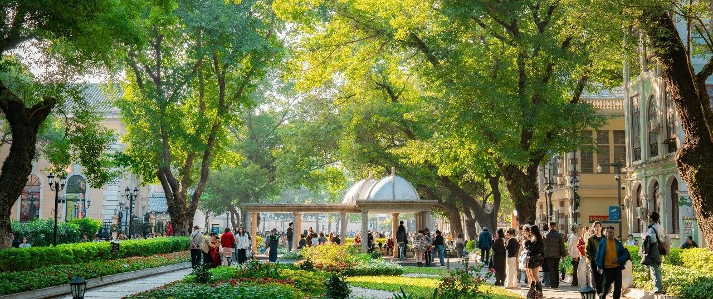

都是赔光的命~
美股大跌，纳指跌2.38%，标普500跌1.74%；
值得注意的是，标普500跌破6500点这个强支撑点，存在向下探至6289-6300点的可能；纳指100从最高点下跌10%+，进入技术性调整的区间。
希望继续下跌，纳指100和标普500上周五没买够就反弹了，这次能多跌一些就再好不过了，这两个宽基指数ETF所在的稳健型账户占比目前17%+，准备提升至20%+，这次看看能否有机会。
进取型账户中，由于持仓清一色美股七巨头+台积电+博通/AMD和少量奈飞+甲骨文的原因，这段时间波动跟坐过山车似的，账面浮盈回撤幅度大：
Meta暴跌7.96%，创去年10月8日以来单日最大跌幅。Meta和谷歌吃了个官司，Meta这周已经在涉及儿童安全的两起重大法律案件中败诉。
我在556美元节点的加仓设置顺利触发，往下在515和475美元设置了防守加仓节点。
谷歌大跌3%，跌至280美元，落在第一个支撑区271-276美元附近。我第二重仓是谷歌，这段时间浮盈回撤了些，仓位占比跌破18%；
微软继续下跌，跌1.37%，收盘价365.97美元。但距离345-355这个强支撑位还有一点距离。
我设置了355的加仓节点，如果能顺利触发，买入后就不再加仓，会持仓观望至底部信号明显再适当加仓，主要是这轮下跌中买够了，目前微软的仓位占比11%+，如果355的节点能触发，仓位占比会在15%左右，等上涨修复后，仓位占比将毫无悬念突破20%；
特斯拉跌3.59%，收盘价372美元。经过460和490美元这两个节点的减仓，叠加现在股价下跌，特斯拉的仓位占比已经被控制在1.5%左右。没有加仓的打算，除非出现300以下的价格，比如280这类，我会考虑加仓一些进来。
台积电大跌6.26%，等有300美元以下的价格，再考虑加仓一些，目前的价格对我没有吸引力。
亚马逊跌1.97%，苹果微涨，英伟达跌4.16%，但还没有跌破170美元，迟迟未触发170美元以下的加仓设置。
博通跌2.95%，博通我还有一个289美元的加仓设置未触发。AMD跌7.49%，收盘价203.77美元。
稳健型账户中，这段时间也回撤不少。首先是标普500和纳指100这两个仓位占比超55%的宽基指数ETF的下跌，其次消费股板块（Costco、沃尔玛、麦当劳、宝洁）最近也有些许下跌，最后是医药保健板块（礼来、联合健康、强生、诺和诺德）的下跌。
防守型账户，账面浮盈回撤最小，美债的仓位占比突破65%，且收益率上涨不少。前两天被盾的那篇更新，我写了自己加仓一些10-30年的长期美债进来，收益率约4.39-4.9%左右；可口可乐、强生、伯克希尔、SCHD这段时间都有一些回撤。
整体心态还很平和，希望这波大盘的下跌，能有个15%+，那就达到我的预期。
SpaceX即将IPO，目前市场传言估值会按1.75万亿美元史上最大IPO上市。如果能实现，我会有8倍+的收益率。
早前写过，我四五年前溢价从别的私募基金手里买过来300万美元的SpaceX，当时SpaceX还很不被看好，估值几年没怎么涨了。当时会买也受了我家老三的影响，彼时他4岁，很喜欢SpaceX，那会整天火箭、黑洞、白洞等讲个没完。
这段时间看了下孩子们的账户，老大的由于重仓微软，回撤最严重，老二老三的回撤也不小。但因为之前跟我一样做低成本/负成本，高位减仓的操作，这轮下跌手里有资金可以耐心等加仓机会的出现。
每个人资金体量、成本、仓位等不一样，加仓的数量和节点也会不一样。
对于大多数资金体量小的人来说，集中一两只个股+两个宽基指数ETF就足够了，避免太分散导致个股大暴跌给出机会时，没有足够的资金加仓。
50万美元以下，都适用以上情况。300万美元以下，集中在5-6只个股和宽基指数顶多了。
有的人天天称体重，却不知道自己到底几斤几两。不到10万美元，买五六只个股，我也挺服气的。
之前经常说，绝大多数人把精力集中在主业上，踏踏实实把它做好、发展好，创造现金流，投资当副业做一做就可以。
先让自己做到公司的中高层管理者，或在行业里成为有一定话语权的人，再看这句话会有更不一样的体验。
… …
今天做完市场调研，南京和苏州也就走完了，前天和汇率一起做了个更新，被盾了。
现在可以确定汇率是个G点，后续确实不能再写，不然号都没了。对房地产不看好的信息也少写，一样也是G点。
现在能写的东西越来越少，跟两年前还有五六年前，已经很不一样。
昨天在一家规模型企业做市场调研，朋友陪着，晚上一起吃饭时，他们又拉上了些本地的企业主。
介绍到我的时候，我表示自己在大A混不下去了，只能在美股混口饭吃。他们表示大A确实难混，美股不知道怎么混，也没有那个精力，很多是让人代操作，也吃过一些操作不当的亏。
我这种金融消费者，早年生活缝缝补补，A股挥金如土。这几年反过来了，生活平淡无奇，就喜欢美股现危机，每次都是买买买，权当消费。
还好运气不错，最后都能涨回来，收益率不错，才导致没有破产。
饭桌上有个做工程的大哥，问现在有哪些行业还有机会试试水的。
我觉得他这样的问题，是过去一个时代赚钱最容易一批人的困惑。
我说他现在还能经常出来跟朋友一起吃饭，还能考虑投资新的行业，就已经很说明自己本身的实力了。
大多数搞工程的，这两年都没出门见人，更别说聚餐之类的，被欠款和垫资拖垮了他们。
无论是做工程的，还是做房地产开发的企业，都是过去一个时代最赚钱的一个群体。
当时的钱来得太快，大多数人没有危机意识，以为日子会永远好下去，特别是做白手套的人。
他们的财富积累不是靠科技创新，也不是靠创造价值，而是典型的权力变现。
突如其来的巨大财富让他们产生幻觉，以为是自己的能力超群，以为自己是丛林里的猛兽。
但对于白手套来说，财富只是权力的影子，权力的容器一旦破碎，里面的人一文不值。你以为你是运筹帷幄的棋手，其实你只是棋盘上的一颗棋子。
权力可以让你一步登天，也能让你在转瞬间失去所有。
这类群体，现在很多再创业都不太行，自身的局限性太明显，都是赔光的命，还是老老实实守着手头的钱别乱投资最重要。
能意识到自身局限性和清醒认识自己的，实在要投，往外看一些保本的，不要局限在国内。
对于大多数普通人来说，把握好行业发展最好的那五六年，全身心投入进去，专注会让人成长非常大。
任何行业都有周期，越赚钱就越努力，争取在行业高速发展的五年赚够一辈子生活所需的钱，然后适当投资做新机会尝试。
过程中不要狂、不要飘，小心翼翼，如履平地。
就这样吧。
免责声明：本人提供的信息仅供参考，不构成投资建议。本人的交易不代表任何立场；投资者应根据自身财务状况、投资目标等情况自主做出投资决策并承担投资风险。投资有风险，入市需谨慎。